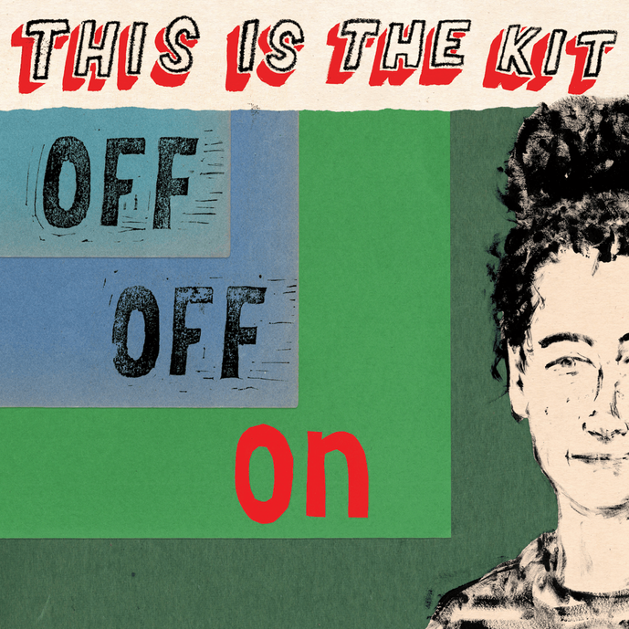
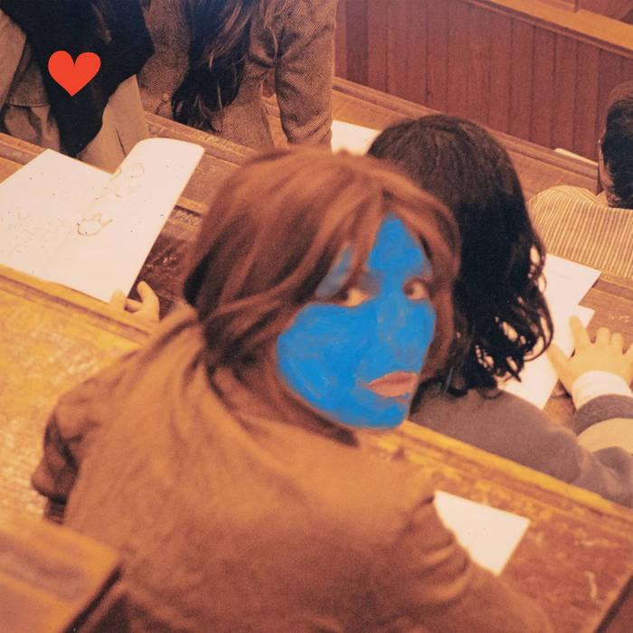
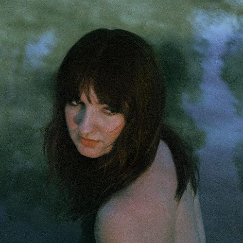
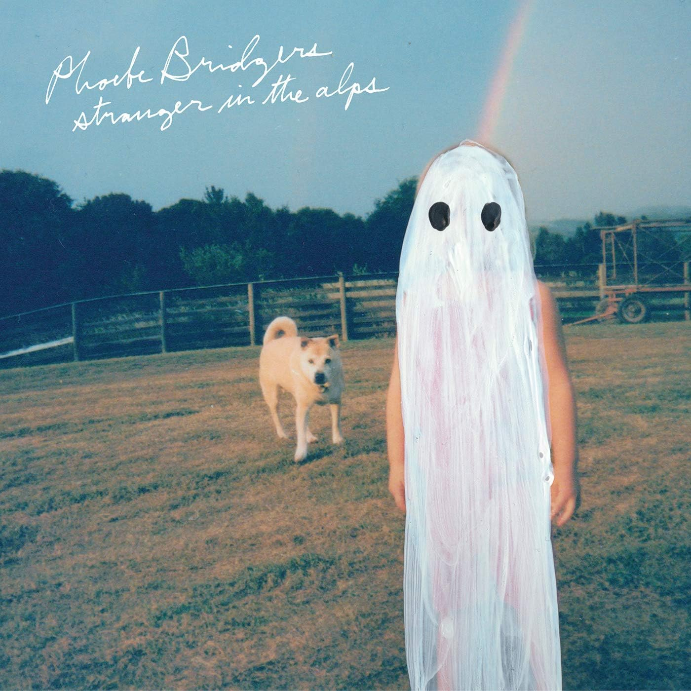
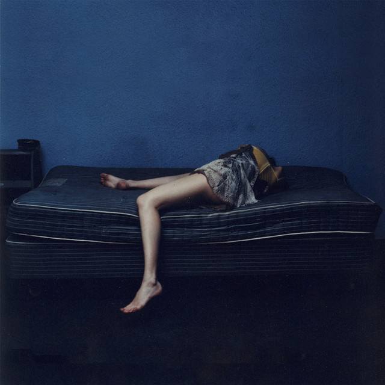
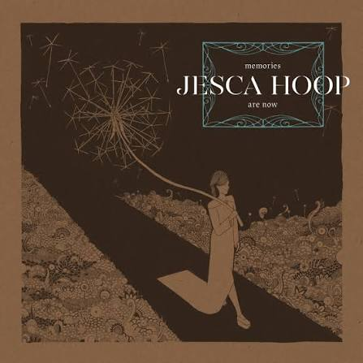

Nei miei anni di ascolti musicali, le voci femminili sono state per me importanti (Patti Smith, PJ Harvey, Lisa Gerrard o Elizabeth Fraser) ma onestamente non centrali, almeno fino a poco dopo il 2000. Le cose hanno cominciato a cambiare intorno al 2004, con il lungo periodo di fissa per l’indietronic femminile (Lali Puna, per “colpa” del film “Le conseguenze dell’amore”, Ms John Soda e Broadcast, per fare qualche esempio), seguito dall’innamoramento per St Vincent, fino all’esplosione delle cantautrici alt-pop folk di fine anni 10, che nel difficile anno della malattia e poi della scomparsa di mia moglie, sono state per me un prezioso - e probabilmente non casuale - conforto emotivo. Da allora, la maggior parte della musica che ascolto è scritta e cantata da donne, mentre di giovani uomini che producono musica moderna e interessante secondo me ce n’è proprio pochi.
Tra le cantautrici che sono diventate miei ascolti frequenti e costanti c’è sicuramente Aldous Harding, che andrò peraltro a vedere lunedi 29 al Lokomotiv di Bologna (e meno male che per puro caso solo pochi giorni fa, ho scoperto che sarebbe venuta in Italia!), il cui album Designer mi ha accompagnato nel complicato 2019 e nell’altrettanto complicato 2020. Insieme a lei, si sono impadronite della mia heavy rotation This is the Kit (ovvero Kate Stables), Madison Cunningham, Phoebe Bridges, Marika Hackman e Jesca Hoop. In questo post lascio il mio album preferito di ciascuna di esse.
This is the Kit - Off Off On

Ho conosciuto Kate Stables e il suo progetto This is The Kit con l’abum Moonshine Freeze, dolcemente incalzante ma delicato come un abbraccio, che mi ha fatto moltissima compagnia nelle lunghe nottate in ospedale nel 2018. Ma è stato il successivo Off Off On del 2020 a conquistarmi completamente. Un album maturo, riflessivo e intimo ma con delle incredibili aperture armoniche in arrangiamenti che in alcuni momenti ricordano il minimalismo di Steve Reich e Terry Riley, e un songwriting da pelle d’oca. Kate Stables lo presenta come un album che parla di “events catching up with you and how you catch up with events”, e per capire il senso di questa frase basta leggere il testo di Started Again, diventata rapidamente una delle mie canzoni preferite di sempre, anche per ciò che della mia vita recente lego ad essa: “Carefully you must build it up again / Steadily you must fall apart / Crumbling, was falling down again / There you were, we are, you are / Started again / This is your strength".
Aldous Harding - Train on the island

Una delle caratteristiche di Aldous Harding che mi ha sempre colpito è la ricchezza di colori di cui dispone la sua tavolozza creativa. I suoi album sono molto diversi fra loro, così come le canzoni stesse di ciascun album, persino la sua voce si plasma e si adatta con molti diversi registri allo spirito di ciascuna canzone. Eppure c’è lei, in ogni nota, in ogni arrangiamento, in ogni lirica e in ogni copertina dei suoi 5. L’intimità è un po’ la cifra che unisce tutte le songwriter di cui parlo in questo post, ma il segno distintivo nell’intensità della voce, degli arrangiamenti e dei suoni notturni e minimalisti dell’artista neozelandese, è il modo in cui questi sottolineano e valorizzano gli spazi vuoti, soprattutto in questo ultimo e forse migliore e più maturo album Train on an Island. Fatico a parlare di una canzone specifica, l’album mi piace tutto, dall’inizio alla fine, ma una menzione speciale va al finale della splendida One Stop, ripreso anche in San Francisco
Madison Cunningham - Ace

Avevo ascoltato un paio di album di Madison Cunningham, che avevo trovato carini ma senza grande entusiasmo. Mi sono quindi accostato a questo Ace - uscito nel 2025 e subito acclamato dalla critica - con un po’ di scettica curiosità. E invece mi ha fulminato.
Ace è un disco di pezzi bellissimi (Break the Jaw per farsi un’idea della ricchezza narrativa della scrittura musicale) che vanno molto oltre l’impronta folk dei suoi primi dischi, con complessi arrangiamenti mai banali e mai ridondanti, sempre essenziali e necessari, che mi hanno tra l’altro ricordato il mondo strumentale artsy, modern-progressive e post-rock dei Black Country, New Road.
Phoebe Bridges - Strangers in the Alps

Che bel disco, leggero ma profondo e con un giusto mix di folk e college pop e un tocco di ruvidezza genuina, E canzoni belle, soprattutto, su tutte la splendida Georgia, e il suo crescendo di voci intrecciate, ma anche solo l’accoppiata iniziale della notturna ed evocativa Smoke Signals e il pop ruvido di Motion Sickness. Un esordio di grandissima qualità, seguito da un album altrettanto bello, Punisher. Ora è appena uscito il singolo Lost Boys che anticipa il nuovo album dopo 5 anni di silenzio, un po’ troppo mainstream pop per i miei gusti, ma vedremo.
Marika Hackman - We slept at last

Non finirà mai di stupirmi il potere evocativo della musica, soprattutto quando leghiamo delle canzoni a delle situazioni emotivamente forti: la saldatura sarà per la vita, e basteranno tre note per rivivere quei momenti di grande intensità. È quello che mi succede con questo straordinario album di esordio di una poco più che ventenne Marika Hackman: profondo, ricco di coraggiosi chiaroscuri e di malinconia struggente, e solcato da sconfinamenti fra generi e territori musicali, guidati con sicurezza e maestria. Gli album successivi sono molto diversi e mi hanno segnato decisamente meno, ma diventa una questione di gusti.
Jesca Hoop - Memories are now

Ho conosciuto Jesca Hoop solo l’anno scorso, scoprendo questo album del 2017 (su storica etichetta SubPop) che mi era sfuggito. Una perla, un album bellissimo, anche in questo caso tutto azzeccato dal primo all’ultimo brano. Jesca Hoop è certamente - in questo gruppetto - la songwriter più legata al folk, reintepretato in chiave moderna ma con forti radici acustiche. Su tutti i brani, la progressione incalzante delle armonie vocali di The Lost Sky (da brividi), e l’evocativa Animal Kingdom Chaotic, quasi una Laurie Anderson folk.
Anche in questo caso, un unicum: dopo questo album, i successivi sono risultati un po’ deludenti (al punto da farle decidere di incidere un remake di questo Memories are Now in versione all-acoustic.).